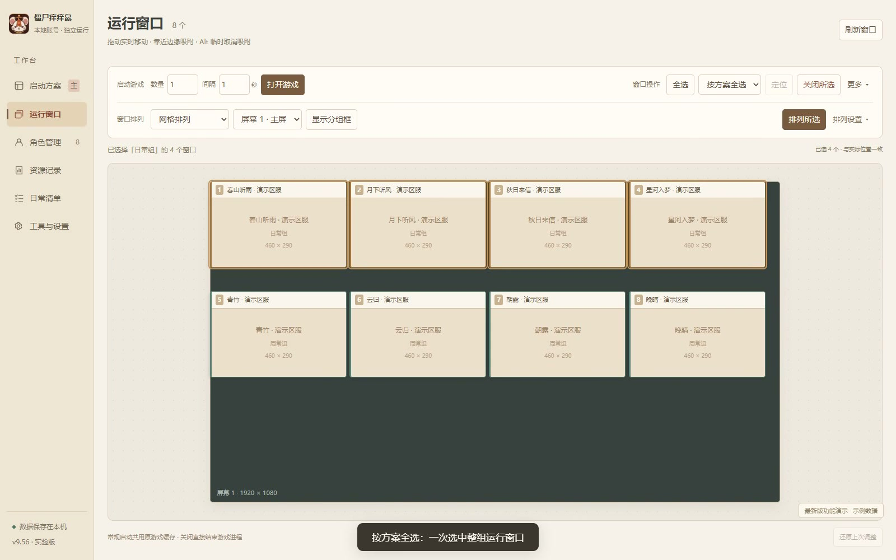

启动方案与角色管理
把角色归入不同方案，保存画面尺寸和排列设置。常用组合随时找到，不必每次重新整理。
按角色分组，按自己的习惯排列。
示意布局 · 不代表运行中的真实角色把常用的事情，放到顺手的位置
把角色归入不同方案，保存画面尺寸和排列设置。常用组合随时找到，不必每次重新整理。
在同一个工作区查看、定位和移动游戏窗口，使用网格或错落排列，让桌面恢复秩序。
将奖励按角色、日期和资源类型归档，用日报、月历、邮件明细与统计回看收获。
看看实际界面
以下画面使用示例角色与数据。日常清单、任务快照及最新排列改进仍在完善，具体可用功能请以下载版本说明为准。

每日与每周任务、角色分组排序、任务设置快照，以及寄养、结界卡和交换冷却提醒。部分检测仍需实测核对，不承诺全部任务均可自动检测。
视频展示开发中的功能，部分内容可能尚未包含在当前发行包中。
第一次使用
从 GitHub 或 Gitee 的发行页下载 Windows x64 压缩包。请完整解压后使用，不要直接在压缩包里运行。
运行“僵尸痒痒鼠.exe”，按使用手册选择游戏目录，管理角色与启动方案。新版首次使用流程以实际发行版本为准。
读取结果以游戏界面为准，部分数据需要先打开对应面板。升级前保存方案并备份软件目录里的 data。
免费获取
当前发行：v9.57 实验版
项目主页不代表软件已发布新版。所有更新以发行页为准。本软件与游戏开发及运营方无隶属关系。客户端读取、代理和设备隔离等实验功能可能触发安全检测或违反游戏规则，导致限制登录、临时或永久封禁，以及账号或虚拟财产损失。作者不保证账号安全、解封或免受损失。若无法接受这些风险，请勿使用相关功能。
角色配置、账号缓存与记录主要保存在本机软件目录。请妥善保管个人缓存及代理凭证，及时备份。记录与提醒仅供辅助核对，可能不完整或不准确，以游戏内显示为准。检查更新会访问配置的发行平台。
本软件完全免费，无需激活码、会员或付费授权。禁止未经作者授权倒卖，或将本软件改名、打包后收费出售。遇到冒充作者收费的情况，请勿付款，并向相应平台举报。